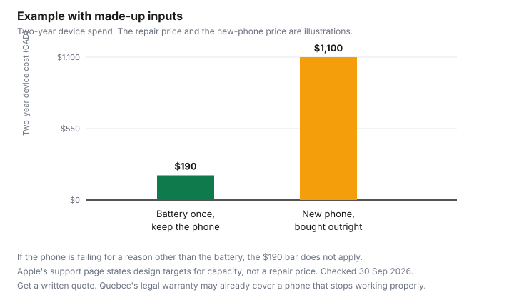

Technology · Canada
Replacing a Phone Battery vs Buying a New Phone: The Repair-First Math
Replacing a phone battery is usually cheaper than buying a new phone when the rest of the phone still works. Check battery health first (on iPhone, Settings > Battery > Battery Health), and in Canada the Copyright Act allows bypassing a digital lock solely to repair a device. A phone that dies at 3 p.m. is often a battery, and the replacement offered at the counter is often a new phone. The repair can be a small bill. The new phone can be a financing contract. This page is the order of operations: how to see battery health, who can replace the battery, what Canadian repair rules actually say, and a made-up two-year comparison. It does not quote a shop price. Appliance repair decisions, which are a different object, are on repair or replace appliances. This is not legal advice.
Key takeaways
- On iPhone 6 and later, Apple's support page says to open Settings, then Battery, then Battery Health, for maximum capacity and peak performance. iPhone 14 and earlier are designed to hold 80 percent at 500 cycles under ideal conditions. iPhone 15 models are designed to hold 80 percent at 1,000 cycles. That is a design statement, not an order to replace the phone.
- A Pixel help page describes Battery health as charging settings, including a limit of 80 percent. It is not a universal Android capacity percentage. Check the phone maker.
- Manufacturer, authorised, independent, and do-it-yourself are different warranty positions. Check the manufacturer's warranty terms before you assume a repair voids them.
- Copyright Act section 41.121 says circumventing a technological protection measure solely to maintain or repair a product, including diagnosis, is not the anti-circumvention breach. It is not a licence to infringe copyright. Quebec's 5 October 2025 measures require parts, repair services, and repair information for a reasonable time, unless the merchant disclosed otherwise in writing before the sale.
- Example with made-up inputs: a $190 battery and a kept phone versus an $1,100 new phone. Get a written quote. Recycle the old battery through your province's program.
Battery health signs
Shorter time between charges, shutdowns when the percentage still looks fine, and a phone that is hot while it sits are reasons to look at the battery screen. They are not, by themselves, a reason to finance a new phone. Swollen batteries and a case that no longer fits are a stop-using question for the maker or a shop, not a home experiment. This page does not give a teardown procedure.
Apple's iPhone battery and performance page, as of 29 Sep 2026, separates battery life, which is how long the phone runs before you charge it, from battery lifespan, which is how long until the battery needs replacement. For iPhone 6 and later, the page says iOS shows battery health and whether a replacement is recommended. The steps on that page: open Settings, tap Battery, tap Battery Health. The screen includes maximum capacity, which is capacity relative to when the battery was new, and peak performance capability. A message that the battery's health is significantly degraded says an Apple Authorized Service Provider can replace the battery to restore full performance and capacity. The page says that message is not a safety issue and that you can still use the battery. Another message says the health information might not be accurate and to get service.
The same page states design targets, under ideal conditions. Batteries of iPhone 14 models and earlier are designed to retain 80 percent of original capacity at 500 complete charge cycles. Batteries of iPhone 15 models are designed to retain 80 percent at 1,000 complete charge cycles. The exact percentage depends on how the phone is used and charged. A reading of 80 percent is the design point those sentences use. It is not a rule that you must replace the phone, and it is not a rule that you must not. A one-year warranty, the page says, includes service coverage for a defective battery, plus local consumer laws. Outside warranty, Apple offers battery service for a charge. The charge is not on this guide. Check Apple's service page.
Android does not have one screen this guide can describe for every maker. Google's Pixel help page "Get the most life from your Pixel phone battery," as of 29 Sep 2026, puts Battery health under Settings, then Battery, then Battery health, then Charging optimization. The choices there are adaptive charging to 100 percent and a limit to 80 percent. That page is about how the Pixel charges. It does not, in the cited text, show a maximum-capacity percentage for every Android phone. If your phone is not a Pixel, check the manufacturer's help page for a battery-health or battery-usage screen. Do not install a random "battery doctor" app to get a number the maker does not publish.
| What you notice | Where to look |
|---|---|
| The day got shorter | iPhone: Settings, Battery, Battery Health, maximum capacity. Pixel: the charging settings under Battery health do not replace a capacity reading the maker may not show. |
| Unexpected shutdowns | iPhone peak performance messages on the same Battery Health screen. The page says performance management can turn on after an unexpected shutdown on listed models. |
| "Service" or "significantly degraded" | Apple's page points to battery service. It also says you can keep using the phone. Get a written quote before you buy a new one. |
| Swelling, heat, or a lifted screen | Stop using the phone and ask the maker or a shop. Do not puncture the battery. Recycling comes after it is removed by someone set up to take it. |
| A percentage you cannot find | Check the manufacturer's help page. This guide does not treat a dial code or a third-party app as an official reading. |
Manufacturer vs independent repair
Four channels exist. The manufacturer, or a provider it authorises, uses its own parts and its own warranty on the repair.
An authorised provider is in that network. An independent shop is not, unless the maker says it is. A do-it-yourself kit is you, plus whatever parts the kit contains. Prices for all four: check the provider. Nothing on this page is a quote.
Warranty effects are in the manufacturer's warranty terms, not in a slogan. Check those terms before you book an independent repair, and ask the shop what warranty it puts on its own labour and parts. A shop can do good work and still leave you outside the maker's warranty. A maker can refuse a later claim for a reason that has nothing to do with the battery. Read the refusal. The phone-and-laptop protection guide, protection plans, is the stack of warranties you might already have, including a card certificate. A plan you bought at the till may require the maker's channel. Check the certificate.
Quebec's good-working-order warranty is a different desk from a paid battery swap. From 5 October 2026, a new phone bought or leased from a Quebec merchant has three years of automatic coverage from delivery if it stops working properly. Whether ordinary battery wear counts as that kind of malfunction, or as maintenance the warranty does not cover, is a question for the Office de la protection du consommateur and the facts of the phone. The OPC's examples of what is outside the warranty are on the Quebec warranty guide. Ask before you pay a shop, if the purchase date puts you inside those years.
| Channel | Warranty position | Parts |
|---|---|---|
| Manufacturer | The maker's warranty and any repair warranty it states. Apple's page describes one year for a defective battery, then service for a charge. | The maker's parts. Price: check the maker. |
| Authorised provider | In the maker's network if the maker says so. Keep the work order. | Usually the maker's parts. Confirm on the work order. |
| Independent shop | The shop's own warranty on labour. The maker's warranty: check the manufacturer's terms. Do not assume it is void, and do not assume it survives. | Ask whether parts are the maker's or another supplier, and what the parts warranty is. |
| Do-it-yourself kit | You hold the result. Check the manufacturer's terms. A puncture or a swollen cell is not a kitchen job. | Whatever the kit supplies. Quality is not set by this page. |
Right-to-repair changes
Two Canadian texts changed the repair conversation. Neither one sets a battery price, and neither one is a personalised legal opinion.
Federal: section 41.121 of the Copyright Act, on the Justice Laws page as of 29 Sep 2026, says paragraph 41.1(1)(a) does not apply to a person who circumvents a technological protection measure for the sole purpose of maintaining or repairing a product, including any related diagnosing, if the work the measure controls is part of the product. The exception also applies when you do that for someone else. It does not apply if what you do infringes copyright. The page says the Act is current to 21 September 2026 and that the section page was modified 28 September 2026. In ordinary language: bypassing a software lock only to diagnose or repair is addressed by this exception, and copying software you do not have the right to copy is still an infringement. This is a description of the section, not advice to circumvent anything.
Quebec: a government release of 5 October 2025, as of 29 Sep 2026, announces measures on repairability. Merchants and manufacturers must make replacement parts and repair services available for a reasonable time after purchase, and must make the information needed to maintain or repair the good available, with manuals and diagnostic software given as examples. An exemption is possible if they warn the consumer in writing before the purchase. Parts and repair services must be available at a reasonable price. Installation of parts must be possible with commonly available tools. The release says the availability guarantee for goods that need maintenance has existed for more than 45 years, and that the written warning before the sale is how an exemption is supposed to be visible while you are still shopping. It does not state a number of years that counts as "reasonable." If a phone listing says parts will not be available, that writing is the document to read before you pay. The campaign named in the release is "Ne jetez pas vos droits à la poubelle."
The good-working-order warranty, which starts 5 October 2026 for listed new goods, is the later clock. Three years for a new phone is the OPC duration, summarised above and explained in full on the Quebec guide. Other provinces: check your province. A volunteer repair café is a different route for appliances and small household goods. The repair café guide is that path. A lithium phone battery is not a lamp to be fixed at a drop-in table unless the hosts say they accept it.
Math with made-up inputs
Example with made-up inputs. A battery replacement costs $190, once, and you keep the phone.
A new phone bought outright costs $1,100. Over two years the device spend is $190 versus $1,100. The plan you already pay is left out, because you would pay it on both paths if you keep a line. If the phone is failing for a reason other than the battery, cracked beyond use, or no longer receiving security updates, the $190 path does not buy you two years. Get a written quote. If the quote is close to a phone you would have bought anyway, the new phone is the honest comparison. If the quote is a fraction of that phone, the repair is the comparison the chart draws.
| Path | Two-year device spend | When this sketch does not apply |
|---|---|---|
| Replace the battery and keep the phone | $190 | The phone has a separate failure, or updates have stopped, or the written quote is not $190. |
| Buy a new phone outright | $1,100 | You were going to replace it for a reason other than the battery. Financing would add a balance. See the financing guide. |

After repair
Charge the phone and look at the same health screen you used before, after the maker says the reading has had time to settle. Apple's page notes that some iPhone 11 models needed a recalibration of battery-health reporting in iOS 14.5 and later. If the new reading is implausible on day one, check the maker's page before you complain to the shop. Keep the work order with the serial number.
The old battery is household hazardous waste, not garbage and not a drawer. Recycle My Electronics, as of 29 Sep 2026, says the Electronic Products Recycling Association operates regulated programs and asks you to select a province. The provinces named on that page are British Columbia, Saskatchewan, Manitoba, Ontario, Quebec, New Brunswick, Nova Scotia, Prince Edward Island, and Newfoundland and Labrador. Select yours. If your province is not in that list, check your province for the battery program it does run. Fees that show up on a new device receipt are a different topic, covered on environmental handling fees. Do not tape a lithium battery into a mixed recycling bin because a fee was already paid on the phone years ago.
Back up the phone before the repair, and sign out of payment apps if the shop's policy asks you to. Afterward, confirm the phone still receives security updates. A repair that restores the afternoon battery and a phone that cannot be updated are different outcomes. If updates have ended, say so in the comparison with a new phone. The protection-plan question, if you are about to be sold one with the new phone, belongs back on the extended warranty guide for the appliance-shaped pitch and on the phone protection guide for the device-shaped one.
Checklist
Work top to bottom. The quote is the number that replaces the made-up $190.
| Step | Done when |
|---|---|
| Read the health screen | iPhone: Settings, Battery, Battery Health. Other phones: the maker's page, not a random app. |
| Separate battery from other faults | You can say whether the complaint is runtime, shutdowns, or a broken screen, swelling, or ended updates. |
| Check legal coverage | Manufacturer warranty. In Quebec, the good-working-order years if the phone was bought new on or after 5 Oct 2026. Card certificate if you have one. |
| Written quote | Parts source, labour warranty, and total, from the channel you might use. |
| Compare with a new phone | Quote versus the outright price of a phone you would actually buy, plus any financing balance. |
| Recycle the old battery | Your province's program on recyclemyelectronics.ca, or the program your province names if it is not listed there. |
Sources
- Apple, iPhone battery and performance, as of 29 Sep 2026: Settings, Battery, Battery Health; maximum capacity and peak performance; 80 percent at 500 cycles for iPhone 14 and earlier and at 1,000 cycles for iPhone 15 models, under ideal conditions; one-year warranty includes a defective battery, plus local consumer laws; service for a charge outside warranty. No dollar price quoted here.
- Google Pixel Phone Help, get the most life from your Pixel phone battery, as of 29 Sep 2026: Settings, Battery, Battery health, charging optimization, including a limit to 80 percent. Not a universal Android capacity percentage.
- Copyright Act, section 41.121, Justice Laws, as of 29 Sep 2026. Act current to 21 Sep 2026. Section page modified 28 Sep 2026. Repair and diagnosis exception to the anti-circumvention rule. Not legal advice.
- Government of Quebec release, 5 Oct 2025, "Les Québécois seront mieux informés avant d'acheter," as of 29 Sep 2026: parts, repair services, and repair information for a reasonable time; written exemption before the sale; reasonable price; commonly available tools.
- OPC good-working-order pages are summarised on the Quebec warranty guide. Recycle My Electronics homepage, as of 29 Sep 2026: select a province; nine provinces named on that page. Shop prices: check the provider.
Frequently asked questions
How do I know my phone battery needs replacing?
Look at runtime, unexpected shutdowns, and the maker's battery screen. On iPhone 6 and later, Apple's page says to open Settings, then Battery, then Battery Health, for maximum capacity and peak performance. A design target of 80 percent is not, by itself, an instruction to buy a new phone. Swelling or a lifted screen means stop using it and ask the maker or a shop.
Is it worth replacing the battery instead of buying a new phone?
It is worth pricing. A written battery quote next to the outright price of a phone you would actually buy is the comparison. The chart on this page uses a made-up $190 repair and a made-up $1,100 phone so the shape is visible. If security updates have ended, or something else is broken, the repair does not buy the same two years.
Does an independent repair void my warranty?
Check the manufacturer's warranty terms. An independent shop can warrant its own labour and still sit outside the maker's warranty, or the maker's terms may allow it. This page does not state a universal void. Keep the work order and read any later refusal against those terms.
What repair rights do I have in Canada?
Copyright Act section 41.121 says circumventing a technological protection measure solely to maintain or repair a product, including diagnosis, is outside the anti-circumvention prohibition, and it does not excuse copyright infringement. In Quebec, from 5 October 2025, parts, repair services, and repair information must be available for a reasonable time unless you were told otherwise in writing before the sale. This is not legal advice. Check your province.
What should I do with the old battery?
Take it to your province's electronics recycling program. Recycle My Electronics lists programs and asks you to select a province. Do not put a lithium battery in the garbage or in mixed recycling. Environmental handling fees on a new device are a separate charge, explained on the fees guide.
Researched and drafted with AI assistance and fact-checked against official Canadian sources. How we create content.